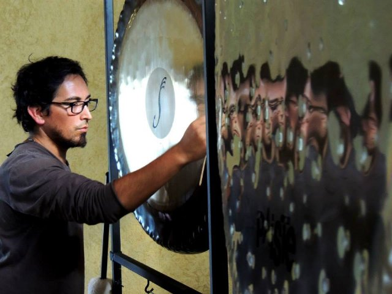

Experiencia Gong
La terapia Gong utiliza la vibración para cubrir todas las frecuencias humanas y centros de energía. Produce beneficios relajantes similares a la meditación, el ejercicio y la respiración, pero sin el esfuerzo físico o mental (gong hace el trabajo). Recomendado para liberar el estrés, la limpieza de los patrones de pensamiento negativos y fortalecer el sistema nervioso.
“Una de las características importantes del gong es el carácter interactivo de los sonidos que produce. El gong produce una nota proyectado contra un espectro de fondo de las notas. Cada nota interactúa con el fondo. Alteran entre sí. Esto crea un patrón complejo, no lineal que entreteje el sentido de la totalidad, en el sentido de la pieza. Puede sentir esto en su cuerpo cuando usted escucha el gong. Todo el cuerpo vibra son estimulados por las olas de sonido del gong. Sea cual sea la relación era entre partes de su cuerpo y todo el cuerpo, es desafiado y transformado por una buena sesión de gong. Los chakras suelen actuar en globailidad trabajando sobre uno se trabajan sobre todos. El gong ayuda a los chakras de interrelacionar y coordinar. Ellos son liberados de los patrones emocionales que disminuyen su fluidez y capacidad de respuesta”.
Es una excelente terapia para todas las cuestiones relacionadas con el estrés, proporcionando un alivio inmediato y la reducción de la depresión, fatiga, sentimientos de separación, la soledad, la ira, el miedo y la hostilidad, y muchas otras enfermedades causadas por la falta de equilibrio y armonía en el cuerpo y la mente, ya que tiene un efecto revitalizante sobre el sistema inmune y nervioso.
Experiencia GONG es limpieza, liberación, sanación y armonización en todos los niveles.
Beneficios
1-El toque sónico del Gong puede ser un toque de curación, que tiene excelentes resultados con las personas que se recuperan de una amplia
gama de síntomas de condiciones relacionadas con el estrés al dolor crónico y la artritis
• Aliviar el dolor de cuello.
• Dolores de cabeza
• Dificultades menstruales
• Calambres en el tórax y el sistema respiratorio superior
• Reduce el dolor muscular
• Mejora la flexibilidad de las articulaciones y la amplitud de movimiento
2 . Crea una relajación profunda, armoniza y restaura la mente
3 . Reducción inmediata en el estrés y la ansiedad
4 . Estimula el sistema glandular a un nivel más alto de funcionamiento
5 . Estimula la circulación
6 . Ayuda en la reorganización de la energía emocional y la sensación de que están atados en el cuerpo
7 . Ayuda a romper el comportamiento adictivo
8 . Las sesiones ordinarias de acelerar el desarrollo de la sensibilidad intuitiva y visualización
9 . Se puede regenerar las neuronas y sus interconexiones
10 . Se regenera el sistema nervioso
11 . Restaura el aura
12 . Abre y alinea los chakras
13 . Borra la mente subconsciente de los patrones de pensamiento negativo.
14. Un acercamiento a la infinitud.
